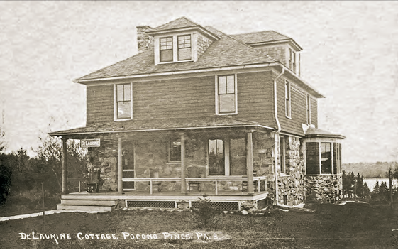

Nestled in the heart of the Pocono Mountains, Lake Naomi has a rich and colorful past, shaped by summer resorts, railroads, ice harvesting, and vibrant local communities. This interactive map invites you to explore over a century of history through rare photographs, postcards, and stories tied to real places you can still visit today. Whether you’re a longtime resident, curious visitor, or history enthusiast, we hope this journey into the past brings the spirit of Lake Naomi to life. Start exploring and see how the land you know has changed and what still remains.